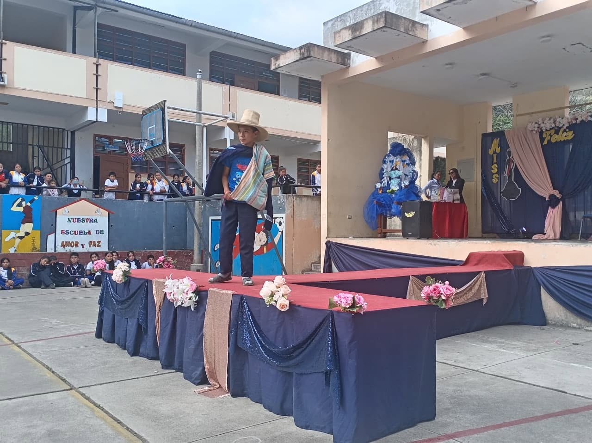
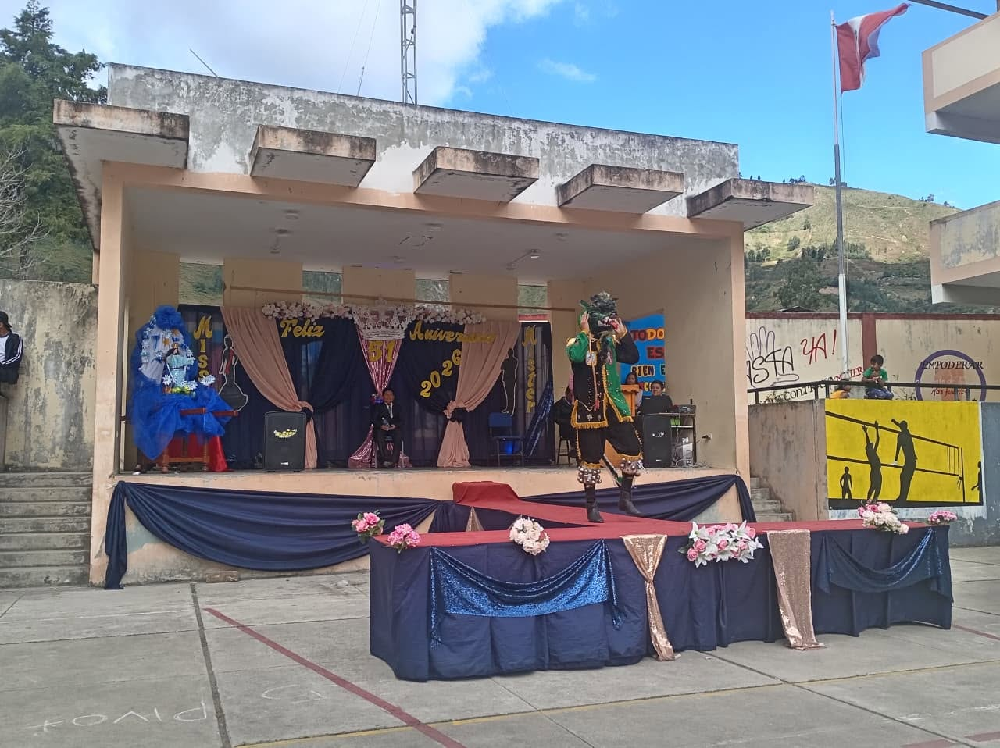
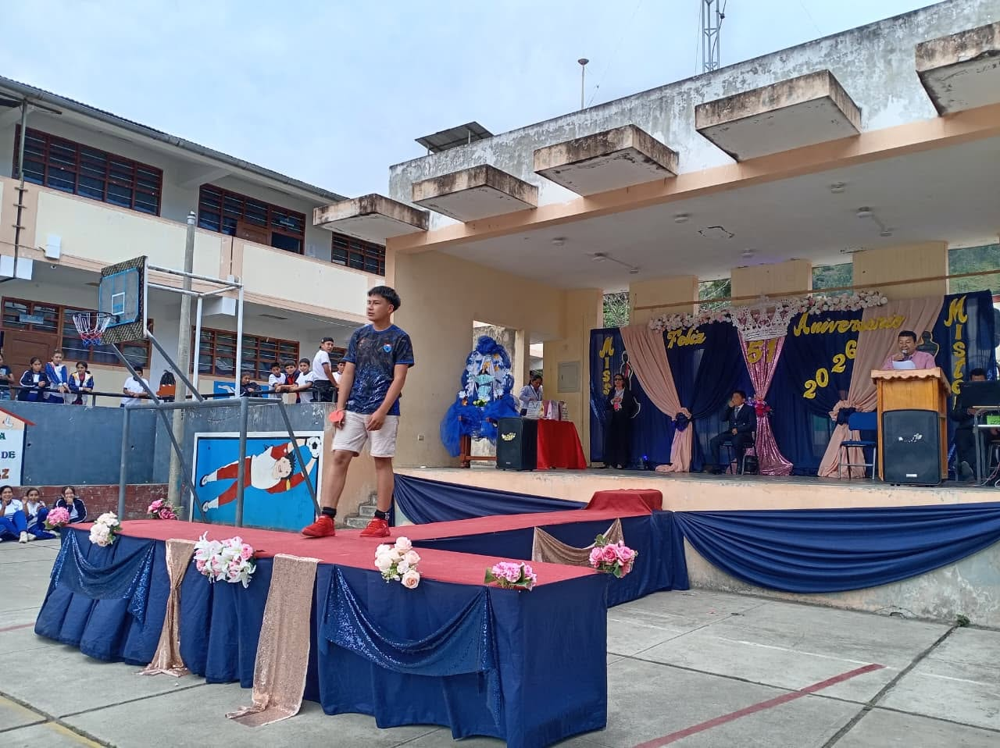
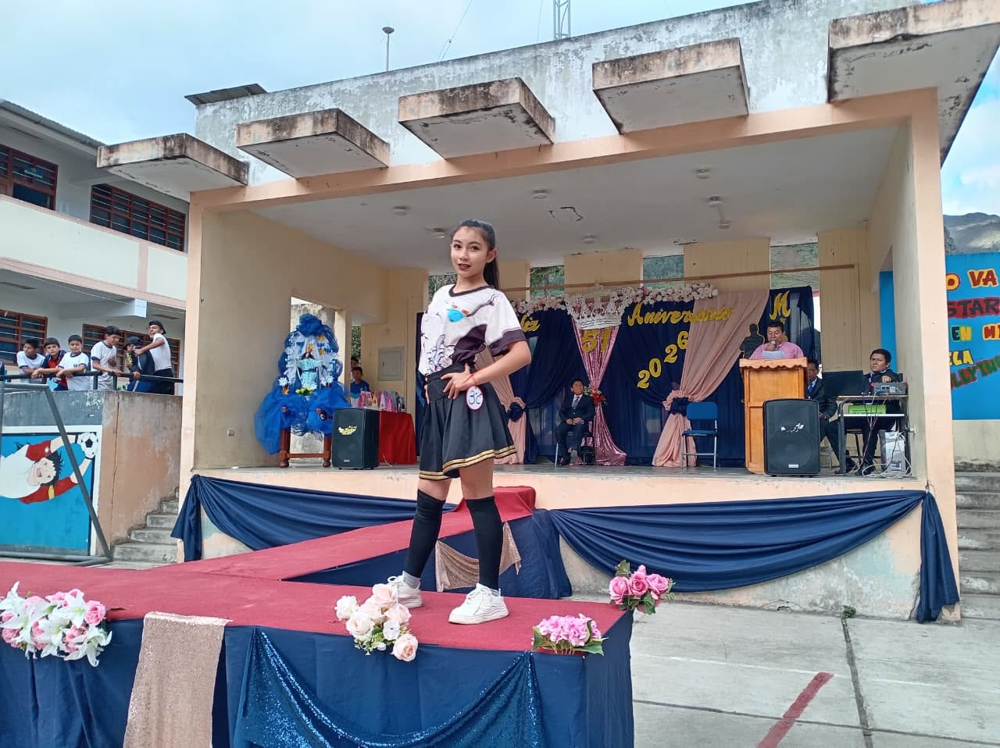
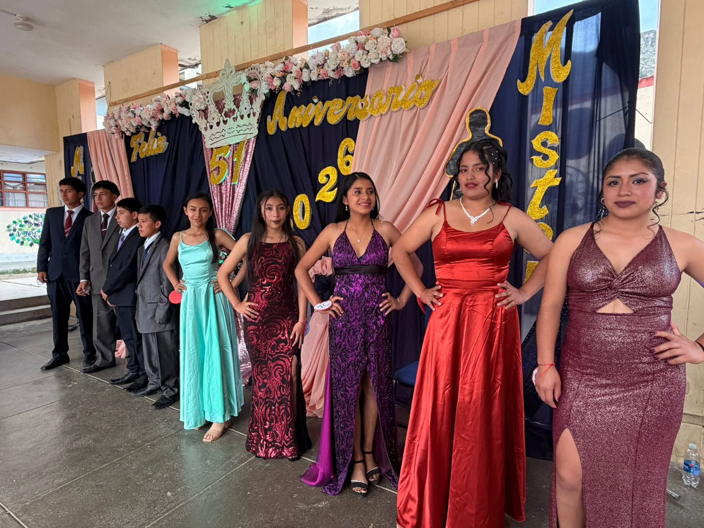
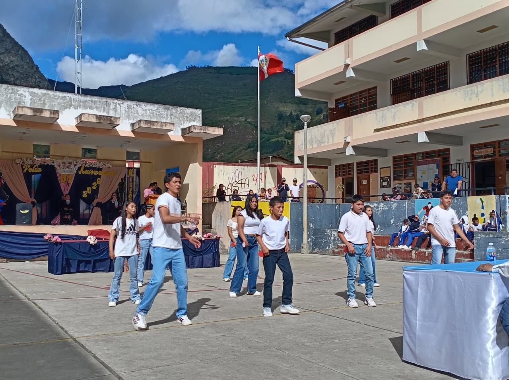

I.E. “Virgen de la Asunción” - Sóndor
Talento, elegancia, identidad y confraternidad asuncionista






En un ambiente de júbilo y festividad, la Institución Educativa “Virgen de la Asunción” de Sóndor llevó a cabo su tradicional Reinado Institucional 2026. Este significativo evento tuvo como objetivo principal resaltar el talento, la elegancia, el carisma y el espíritu de integración de nuestras estudiantes.
La dirección de la institución extiende una afectuosa felicitación a cada una de las candidatas y a las soberanas electas, quienes con orgullo, confianza y compromiso representaron dignamente a sus respectivas secciones. Del mismo modo, se expresa un sincero agradecimiento a los docentes, padres de familia y a la comunidad en general, cuyo valioso apoyo hizo posible que esta jornada fuera una verdadera fiesta de confraternidad y unión institucional.
A través de estas actividades, la comunidad educativa asuncionista reafirma su compromiso de seguir fortaleciendo los valores, la identidad cultural y el sentido de pertenencia de sus integrantes.
¡Felicitaciones a todas las participantes del Reinado Institucional 2026!
El Reinado Institucional no solo promueve la participación estudiantil, sino también el respeto, la autoestima, la expresión artística, la identidad cultural y la integración de toda la comunidad educativa. Estas actividades fortalecen la convivencia escolar y permiten que los estudiantes desarrollen seguridad, responsabilidad y sentido de pertenencia.